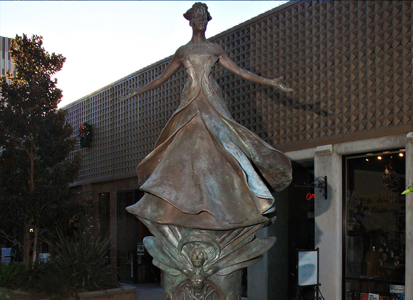
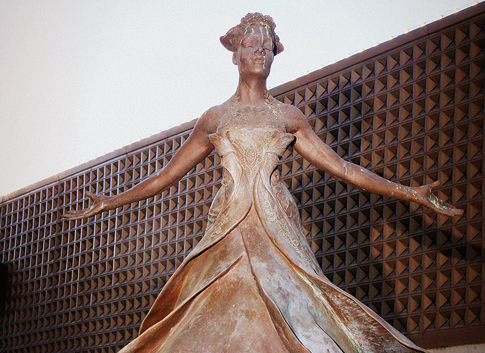

City of Riverside Tour Guide
Settings- 
-

- 
-

International Spirit of Riverside
Riverside has long maintained a spirit of Internationalism and recognition of its multicultural history. Going back to Frank Miller, the founder of the Mission Inn, Riverside has hosted dignitaries from countries all over the world and provided leadership on an International scale. Riverside’s multiculturism has existed for nearly 150 years with large segments of various cultures within its population going back to the 1870s. For example the Mission Inn hosted Japanese, Russian and European dignitaries, national and important state politicians and celebrities, such as several US presidents, Prince Kaya of Japan, Prince Gustav of Sweden, Booker T. Washington, John Muir, and Amelia Earhart. The World Affairs Council was started in Riverside at the Mission Inn (and was once attended by John F. Kennedy here) and other international peace and social conferences have been hosted here.
Riverside was the first American city to take part in the International Sister City program initiated after World War II. That tradition continues today with a robust and global Sister City program including cities in the countries of Japan, Mexico, Korea, China, India, Ghana and Germany. The Statues of Main Street Riverside embody this spirit of internationalism with recognition of various significant civil rights and historical leaders, some with international or national significance, and others of prominent local importance.